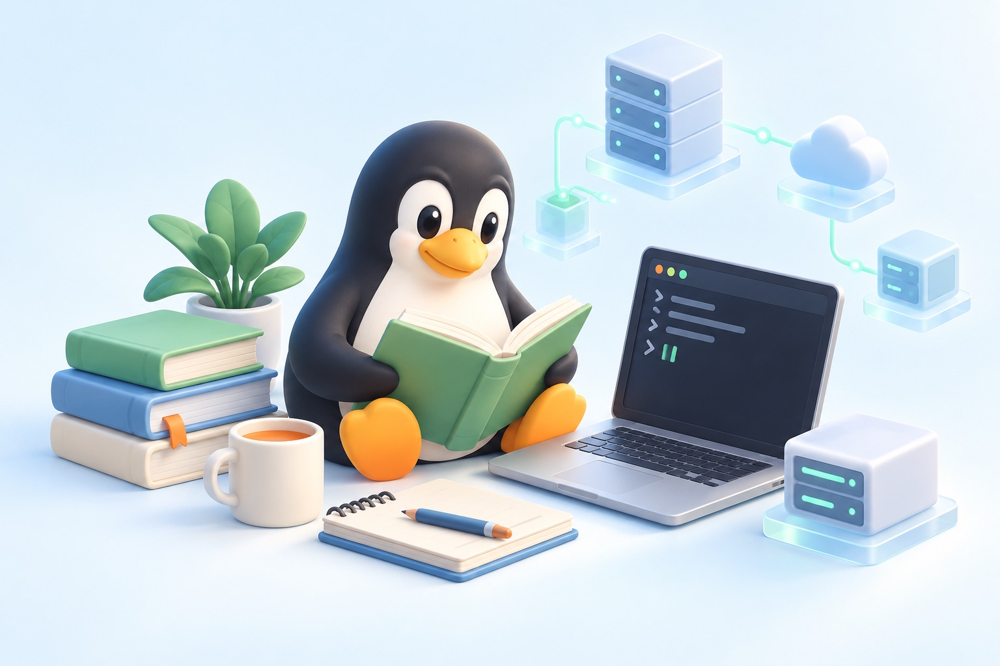

<!doctype html><html lang="zh-CN"><meta charset="utf-8"><meta name="viewport" content="width=device-width,initial-scale=1"><title>LinuC · 学习工作台</title><style>
:root{--bg:#f4f6f2;--ink:#233a32;--muted:#748078;--line:#dce3da;--green:#28664f}*{box-sizing:border-box}body{margin:0;background:var(--bg);color:var(--ink);font:15px/1.65 system-ui,sans-serif}button,input,select,textarea{font:inherit}button{cursor:pointer;border:1px solid var(--line);border-radius:9px;padding:9px 15px;background:white;color:var(--ink)}button:hover{border-color:var(--green)}.primary{background:var(--green);color:white;border-color:var(--green)}aside{position:fixed;inset:0 auto 0 0;width:230px;padding:35px 25px;background:#eaf0e6;border-right:1px solid var(--line)}.logo{font-size:25px;font-weight:750;letter-spacing:-1px}.logo span{color:#79a07c}small,.muted{color:var(--muted)}nav{display:grid;gap:9px;margin-top:45px}nav button{text-align:left;background:none;border:0;padding:12px 16px}nav button.active{background:var(--ink);color:white}aside footer{position:absolute;bottom:28px;font-size:12px}main{max-width:1240px;margin-left:230px;padding:40px 55px}header{display:flex;justify-content:space-between;align-items:center;margin-bottom:32px}h1{font-size:30px;margin:4px 0 8px;letter-spacing:-1px}h2{font-size:19px;margin:0 0 15px}h3{margin:0 0 6px;font-size:17px}.eyebrow{font-size:11px;letter-spacing:2px;color:var(--green);font-weight:700}.hero{background:#223f34;color:white;border-radius:18px;padding:30px 35px;display:flex;justify-content:space-between;gap:20px;align-items:center}.hero p{color:#c9d8ce;margin:8px 0}.hero .primary{background:#dfedb8;color:#233a32}.stats{display:grid;grid-template-columns:repeat(3,1fr);gap:18px;margin:22px 0 30px}.stat,.card,.panel{background:white;border:1px solid var(--line);border-radius:13px;padding:22px}.stat b{font-size:30px;display:block}.grid{display:grid;grid-template-columns:1fr 1fr;gap:20px}.card{margin:12px 0}.card p{white-space:pre-wrap;overflow-wrap:anywhere}.tag{display:inline-block;background:#edf2e7;font-size:12px;border-radius:5px;padding:2px 8px;margin-right:5px}.actions{display:flex;gap:8px;flex-wrap:wrap;margin-top:15px}.toolbar{display:flex;gap:10px;margin:20px 0;flex-wrap:wrap}input,select,textarea{border:1px solid var(--line);border-radius:8px;padding:10px;background:white;color:var(--ink)}input[type=search]{flex:1;min-width:180px}textarea{width:100%;min-height:125px}label{display:block;margin:14px 0 5px;font-size:13px}label input,label select{display:block;width:100%;margin-top:5px}.empty{padding:35px;text-align:center;color:var(--muted);border:1px dashed var(--line);border-radius:13px}dialog{border:0;border-radius:18px;padding:28px;max-width:650px;width:94%;max-height:90vh;overflow:auto;color:var(--ink)}dialog::backdrop{background:#172e2566}.notice{background:#edf2e7;border-radius:9px;padding:14px;font-size:13px}.answer{background:#f3f6ef;padding:18px;border-radius:10px;white-space:pre-wrap}.image{max-width:100%;max-height:260px;border-radius:8px;margin-top:12px}.danger{color:#a33}#toast{position:fixed;bottom:25px;left:50%;transform:translateX(-50%);background:#233a32;color:white;border-radius:9px;padding:10px 20px;display:none}pre{white-space:pre-wrap;overflow-wrap:anywhere} @media(max-width:800px){aside{position:static;width:auto;padding:15px 20px}aside footer{display:none}nav{display:flex;margin:12px 0 0;overflow:auto;gap:4px}nav button{white-space:nowrap;padding:8px}main{margin:0;padding:25px 18px}.grid{grid-template-columns:1fr}.hero{padding:24px;display:block}.hero button{margin-top:15px}.stats{gap:8px}.stat{padding:14px}header{align-items:start;gap:12px}h1{font-size:25px}}

/* Study workspace, v3 */
:root{--bg:#f5f6f2;--ink:#203c34;--muted:#7c8981;--line:#e1e6df;--green:#306a52}body{font-family:ui-sans-serif,-apple-system,BlinkMacSystemFont,"Segoe UI",sans-serif;font-size:14px}button{transition:background .18s,transform .18s,border-color .18s;min-height:42px}button:hover{background:#eef3eb}button.primary:hover{background:#20533f;color:white}button:active{transform:translateY(1px)}button:disabled{cursor:wait;opacity:.55}button:focus-visible,input:focus-visible,textarea:focus-visible,select:focus-visible{outline:3px solid #a5c6ad;outline-offset:3px}aside{width:232px;background:#ecf0e7;padding:36px 24px}.logo{font-size:26px;letter-spacing:-1.2px}aside>small{font-size:11px;letter-spacing:.5px}nav{margin-top:44px;gap:6px}nav button{display:flex;gap:12px;align-items:center;font-size:13px;font-weight:550;border-radius:9px}nav button .nav-number{font-size:10px;opacity:.5;font-variant-numeric:tabular-nums}main{max-width:1530px;margin-left:232px;padding:38px 48px 70px}header{margin-bottom:22px}header .actions{margin-top:0}h1{font-size:29px;letter-spacing:-.8px}h2{font-size:17px;letter-spacing:-.3px}.eyebrow{font-size:10px;letter-spacing:2.4px}.cloudbar{display:flex;gap:9px;align-items:center;padding:10px 0 20px;color:var(--muted);font-size:11px;overflow-wrap:anywhere}.cloud-dot{width:6px;height:6px;border-radius:50%;background:#74a37b;flex-shrink:0}.cloudbar .account{margin-left:auto}.hero{position:relative;padding:32px 36px;border-radius:17px;min-height:210px;overflow:hidden;background:radial-gradient(ellipse at 100% 100%,#42694c 0,transparent 60%),#203e33}.hero h1{font-size:32px;line-height:1.4;max-width:600px;margin:14px 0}.hero p{max-width:570px;font-size:13px}.hero .eyebrow{color:#bfce9b}.hero .primary{background:#deecb4;color:#254130;white-space:nowrap}.hero .primary:hover{background:#eef7d6;color:#254130}.hero-mark{font-size:11px;color:#b3c5b5;margin-top:17px}.dashboard{display:grid;grid-template-columns:minmax(0,1.55fr) minmax(290px,1fr);gap:22px;margin-top:23px}.panel,.stat,.card{border-radius:13px;box-shadow:0 2px 4px #233a3202}.panel{padding:24px}.section-head{display:flex;align-items:center;justify-content:space-between;gap:12px;margin-bottom:16px}.section-head h2{margin:0}.text-button{border:0;background:transparent;min-height:32px;padding:4px 0;font-size:12px;color:var(--green)}.stats{margin:22px 0;gap:14px}.stat{padding:18px 22px}.stat b{font-size:28px;font-weight:600}.stat small{font-size:11px}.stat-label{display:flex;justify-content:space-between;align-items:center}.stat-label span{color:#9caf9a;font-size:16px}.task{display:flex;align-items:center;gap:13px;padding:15px 0;border-bottom:1px solid #edf0e9}.task:last-of-type{border-bottom:0}.task-number{width:30px;height:30px;border-radius:50%;background:#f0f4e9;display:grid;place-items:center;font-size:11px;flex-shrink:0}.task-content{flex:1}.task p{margin:2px 0;font-size:12px;color:var(--muted)}.task button{font-size:12px;padding:7px 13px;min-height:34px}.goal-top{display:flex;justify-content:space-between;gap:14px;align-items:center}.goal-big{font-size:38px;line-height:1.2;font-weight:600;letter-spacing:-1px}.goal-big small{font-size:15px;font-weight:400;letter-spacing:0}.goal-icon{width:52px;height:52px;border:5px solid #dfead5;border-radius:50%;display:grid;place-items:center;color:#599264;font-size:21px}.progress{height:7px;border-radius:10px;background:#edf1e7;overflow:hidden;margin:17px 0 10px}.progress span{display:block;height:100%;border-radius:10px;background:#7f9f61;transition:width .3s}.streak-row{display:flex;justify-content:space-between;gap:12px;margin:22px 0;font-size:12px}.streak-row b{font-size:20px;display:block;color:var(--ink)}.week{display:grid;grid-template-columns:repeat(7,minmax(0,1fr));gap:6px}.day-dot{min-height:43px;width:100%;border:1px solid transparent;background:#f2f4ed;border-radius:8px;font-size:12px;padding:5px;color:#9ca69d}.day-dot small{display:block;font-size:9px}.day-dot.done{background:#dfebd2;color:#386746}.day-dot.today{border-color:#527e50}.habit-caption{font-size:11px;color:var(--muted);margin-top:12px}.quick-card{display:flex;align-items:flex-start;gap:15px}.quick-icon{font-size:22px;line-height:1;display:grid;place-items:center;width:40px;height:40px;background:#f0f4e9;border-radius:10px;flex-shrink:0}.quick-card p{font-size:12px;margin:7px 0 16px}.quick-card h2{margin-bottom:0}.card{padding:22px}.card h3{margin-top:13px;font-size:17px}.card p{font-size:13px;color:#66786b}.tag{font-size:10px;border-radius:4px;background:#eef3e8}.record-meta{display:flex;justify-content:space-between;flex-wrap:wrap;gap:10px;color:var(--muted);font-size:11px;margin-top:10px}.calendar-layout{display:grid;grid-template-columns:1.4fr 1fr;gap:22px}.calendar-weekdays,.calendar-days{display:grid;grid-template-columns:repeat(7,minmax(0,1fr));gap:7px}.calendar-weekdays{text-align:center;color:var(--muted);font-size:11px;margin:20px 0 9px}.calendar-cell{min-height:68px;border:1px solid transparent;background:#f4f6f0;border-radius:9px;padding:8px 3px;display:flex;flex-direction:column;align-items:center;justify-content:center;font-size:13px}.calendar-cell small{font-size:10px}.calendar-cell.done{background:#e2edda;color:#345c3c}.calendar-cell.today{border-color:#6d9464}.calendar-cell.future{opacity:.4}.calendar-blank{min-height:60px}.journal-row{display:flex;gap:14px;padding:17px 0;border-bottom:1px solid var(--line)}.journal-row:last-child{border:0}.journal-day{font-size:20px;font-weight:600;min-width:35px;color:#51734d}.journal-row p{margin:3px 0;font-size:12px;color:var(--muted);white-space:pre-wrap;overflow-wrap:anywhere}.journal-row h3{font-size:13px;margin:0}.milestone{padding:14px;background:#f0f4e9;border-radius:8px;font-size:12px}.goal-settings{display:flex;align-items:center;gap:9px;flex-wrap:wrap;margin-top:20px;font-size:12px}.goal-settings select{padding:6px 10px;font-size:12px}.day-events{padding:12px 0;border-bottom:1px solid var(--line);font-size:13px}.day-events p{white-space:pre-wrap;margin:5px 0;color:var(--muted)}.empty{background:#fafbf7;font-size:13px}.notice{border:1px solid #e4ebdc}.auth-panel{margin:7vh auto;max-width:590px!important;padding:36px}.auth-panel form{margin-top:25px}.auth-panel input{min-height:48px}.auth-panel .primary{width:100%;margin-top:14px}.auth-panel p{font-size:13px}.backup-grid{margin-bottom:20px}
@media(min-width:1600px){main{padding-left:64px;padding-right:64px}}@media(max-width:1100px){main{padding:30px 26px}.dashboard{grid-template-columns:1fr}.calendar-layout{grid-template-columns:1fr}.hero{padding:28px}.hero h1{font-size:27px}.week .day-dot{min-height:47px}}
@media(max-width:800px){aside{width:auto;padding:19px 20px;position:static}.logo{font-size:23px}aside>small{display:none}nav{margin:15px 0 0;gap:6px;padding-bottom:3px}nav button{font-size:12px;gap:0;min-height:36px;padding:8px 12px}nav .nav-number{display:none}main{margin:0;padding:23px 18px 50px}header{flex-wrap:wrap;margin-bottom:10px}header h1{font-size:25px}header .actions{gap:6px}header button{font-size:11px;padding:7px 10px;min-height:34px}.cloudbar{font-size:10px;flex-wrap:wrap;padding-bottom:17px}.cloudbar .account{display:none}.hero{min-height:auto;padding:25px}.hero h1{font-size:26px}.hero p{font-size:12px}.hero button{margin-top:17px}.stats{gap:8px;margin:16px 0}.stat{padding:15px 12px}.stat b{font-size:25px}.stat-label span{display:none}.dashboard{gap:16px;margin-top:16px}.panel{padding:20px}.grid{gap:16px}.calendar-days,.calendar-weekdays{gap:4px}.calendar-cell{min-height:56px;border-radius:6px}.calendar-cell small{font-size:8px}.calendar-blank{min-height:50px}.task{gap:10px}.task p{font-size:11px}.task-number{width:26px;height:26px}.quick-card{gap:12px}.auth-panel{margin:30px auto;padding:25px}.auth-panel h2{font-size:19px}dialog{padding:22px}.goal-big{font-size:34px}}
@media(prefers-reduced-motion:reduce){*{transition:none!important}}
/* Airy Linux learning studio */
:root{color-scheme:light;--bg:#f2f6fa;--ink:#233c52;--muted:#72899b;--line:#dce7ef;--green:#197f79;--mono:ui-monospace,SFMono-Regular,Menlo,Consolas,monospace}body{background:radial-gradient(ellipse at 95% 0%,#d9ecfa88,transparent 50%),#f2f6fa}aside{background:#eaf1f6;border-color:#d9e5ed}.logo{font-family:var(--mono);font-size:18px;white-space:nowrap;color:#25445b}.logo:before{content:'>_ ';color:#248f89}.logo span{color:#248f89}aside>small{color:#6f94a8;font:9px var(--mono)}aside footer{font:10px/1.9 var(--mono);color:#7896a8;border-top:1px solid #d0e1ea;padding-top:15px;right:24px}nav button{color:#69849b;border:1px solid transparent}nav button.active{background:linear-gradient(100deg,#d1eee9,#e0eff4);border-color:#a9d8d2;color:#236e70;box-shadow:inset 3px 0 #369d95}nav button:hover{background:#e0edf4;color:#2a6a83}.nav-number{font-family:var(--mono);color:#7a9eae}header .eyebrow{font-family:var(--mono);color:#388da4}header h1{color:#25445b}header small{color:#8298a9}.cloudbar{font:10px var(--mono);color:#6d94a4}.cloud-dot{background:#4cae98;box-shadow:0 0 0 3px #dcefe9}.cloudbar .account{color:#8aa0b0}.hero{display:block;min-height:336px;position:relative;background:linear-gradient(110deg,#ecf8fa,#e2f2ff);border:1px solid #c7dfed;box-shadow:0 8px 30px #aac3d018;border-radius:15px;padding:55px 30px 28px;overflow:hidden}.hero:before{content:'● ● ●   learning-session / linuc-level-2';position:absolute;top:0;left:0;right:0;height:31px;padding-left:20px;border-bottom:1px solid #d3e7f1;background:#f7fcffbb;color:#7a9dae;font:9px/31px var(--mono);letter-spacing:.3px}.hero>div{position:relative;z-index:1;width:55%;max-width:580px}.hero h1{font-size:28px;color:#28536b;line-height:1.45}.hero .eyebrow{color:#298f8e;font:9px var(--mono);letter-spacing:1.8px}.hero p{font-size:12px;color:#69899d;line-height:1.8}.hero-mark{color:#388f8a;font:10px/1.8 var(--mono);margin-top:13px}.hero-mark:before{content:'[ progress ] ';color:#75a6b2}.hero .primary{position:relative;z-index:1;margin-top:20px;background:#278b85;border-color:#278b85;color:#fff;box-shadow:0 4px 14px #358f8520}.hero .primary:hover{background:#1b7774;color:#fff}.hero-illustration{position:absolute;right:0;top:32px;width:44%;height:calc(100% - 32px);object-fit:cover;object-position:center;border-left:1px solid #d6e8f1;mix-blend-mode:multiply;pointer-events:none}.panel,.card,.stat{background:#ffffffed;border-color:#dce7ef;border-radius:13px;box-shadow:0 4px 16px #90abc008}.section-head h2{color:#35536a}.section-head h2:before{content:'// ';font-family:var(--mono);font-weight:400;color:#82b3c3}.stat b{font-family:var(--mono);font-weight:500;color:#328a85;font-size:29px}.stat:nth-child(2) b{color:#548dc1}.stat:nth-child(3) b{color:#c69950}.stat small{color:#7c94a7}.stat-label span{color:#a8c8d5}.task-number{border-radius:8px;background:#eaf5f4;border:1px solid #d6eae8;color:#5b9e98;font-family:var(--mono)}.task{border-color:#ebf0f4}.task-content strong{color:#39556b;font-weight:550}.task p{color:#8a9ead}.task button{background:#f0f7fa;border-color:#d8e8ed;color:#518498}.tag{background:#edf6f8;border:1px solid #d7e9ee;color:#6f9aaa;font-size:10px;font-family:var(--mono)}button{border-radius:8px;border-color:#d7e4ec;background:#fff;color:#59768d}button:hover{background:#edf6fa;border-color:#a2c8d8;color:#2c748b}button.primary{background:#278b85;border-color:#278b85;color:white}button.primary:hover{background:#1d7570;color:#fff}.text-button{border:0;background:transparent;color:#4d92a6}.text-button:hover{background:transparent;color:#267787}.goal-big{font-family:var(--mono);color:#3a9c91;font-size:38px;font-weight:450}.goal-big small{color:#9fb1bc;font-size:13px}.goal-icon{background:#eaf6ee;border-color:#d3ebdf;color:#69a68a;border-radius:13px}.progress{background:#eaf1f6}.progress span{background:linear-gradient(90deg,#72b6c6,#80c5b4)}.streak-row{color:#8ba0af}.streak-row b{font-family:var(--mono);font-weight:500;color:#54798d}.day-dot{background:#f0f5f8;border:1px solid #e2ebf1;color:#9bb0bf;font-family:var(--mono)}.day-dot.done{background:#e1f1eb;border-color:#c6e5da;color:#5b9a86}.day-dot.today{border-color:#72b8b0;box-shadow:0 0 0 2px #e2f3ef}.habit-caption{color:#91a5b4}.quick-icon{background:#eaf4fa;border:1px solid #d6e9f3;color:#74a8c0;border-radius:11px}.quick-card p,.card p{color:#8398a9}.record-meta{color:#99adbb;font:10px var(--mono)}.card h3{color:#3b6075}.calendar-cell{border-radius:8px;border:1px solid #e6edf2;background:#f3f7fa;color:#8fa3b2;font-family:var(--mono)}.calendar-cell.done{background:#e4f2ec;border-color:#c9e4d8;color:#528973}.calendar-cell.today{border-color:#76b4aa;box-shadow:0 0 0 2px #e5f3ef}.calendar-cell small{color:#9bb0bd;font-family:system-ui,sans-serif}.calendar-cell.done small{color:#73a58f}.calendar-weekdays{color:#96abb9;font-family:var(--mono)}.journal-day{color:#68a696;font-family:var(--mono)}.journal-row h3{color:#507084}.journal-row p{color:#8da1ae}.milestone{border:1px solid #d5e9ed;background:#edf7f8;color:#6c9ca6}.empty{background:#f8fbfd;border-color:#d3e3ec;color:#98acbb}.notice{border:1px solid #d5e9eb;background:#edf7f7;color:#719da4}input,select,textarea{background:#fbfdff;border-color:#d4e2eb;color:#45657d;border-radius:8px;caret-color:#298f89}input::placeholder,textarea::placeholder{color:#a2b5c2}label{color:#738c9f}dialog{background:#fdfefe;color:#3f5b71;border:1px solid #cee1ec;box-shadow:0 20px 70px #56788e33}dialog::backdrop{background:#385b7066;backdrop-filter:blur(4px)}.answer{background:#f1f7fa;border:1px solid #dae8f0;color:#5a7a8f;font-family:var(--mono);font-size:13px;line-height:1.85}.day-events{border-color:#e1eaf1}.day-events p{color:#829ba9}.auth-panel{position:relative;padding-top:55px;background:linear-gradient(140deg,#fff,#f7fcff);border-color:#d0e2ee;box-shadow:0 15px 50px #809db01a;margin-top:30px}.auth-panel:before{content:'● ● ●   welcome / learning-space';position:absolute;top:0;left:0;right:0;height:31px;padding-left:20px;background:#eff7fb;border-bottom:1px solid #d7e8f1;color:#8ba6b6;font:9px/31px var(--mono);border-radius:12px 12px 0 0}.auth-illustration{display:block;width:100%;height:180px;object-fit:cover;object-position:center 55%;border-radius:9px;border:1px solid #deedf4;margin-bottom:22px}.auth-panel p{color:#7f97a9}.auth-panel .notice{color:#65949c}#toast{background:#e3f2ed;color:#487c6c;border:1px solid #badccd;box-shadow:0 8px 24px #7b9caa22}button:focus-visible,input:focus-visible,textarea:focus-visible,select:focus-visible{outline-color:#8fc9c2}::selection{background:#cdece7;color:#285a5e}
@media(max-width:1100px){.hero h1{font-size:24px}.hero>div{width:57%}.hero-illustration{width:41%}.hero{padding-left:25px}}
@media(max-width:800px){aside{background:#eaf1f6;border-bottom:1px solid #d8e5ed}nav button.active{box-shadow:inset 0 -2px #4ba59d}.hero{display:flex;flex-direction:column;min-height:auto;padding:48px 22px 0}.hero>div{width:100%;max-width:none;order:0}.hero h1{font-size:25px}.hero .primary{order:1;align-self:flex-start;margin:17px 0}.hero-illustration{order:2;position:static;width:calc(100% + 44px);height:210px;margin:0 -22px;border-left:0;border-top:1px solid #d6e8f1;object-fit:cover;object-position:center 52%}.hero:before{font-size:8px}.auth-panel{padding-top:48px}.auth-illustration{height:150px}.goal-big{font-size:34px}.stat b{font-size:25px}}

</style><aside><div class="logo">LinuC<span> / </span>Study</div><small>PERSONAL LEARNING ENVIRONMENT</small><nav id="nav"></nav><footer>一步一步，把知识变成能力。<br>云端保存 · 私有资料 · 免费方案</footer></aside><main id="main"></main><dialog id="editor"></dialog><div id="toast" role="status"></div><script src="https://cdn.jsdelivr.net/npm/@supabase/supabase-js@2.57.4/dist/umd/supabase.min.js"></script><script>
'use strict';
const KEY='linuc-study-v1';let state={items:[],activity:[],preferences:{dailyGoal:3}},page='home',query='',filter='all',quiz=[],qi=0,revealed=false;
let db=null,activeUser=null,revision=0,ready=false,busy=false,cloudStatus='正在连接云端…',pendingDraft=null;
let calendarMonth=new Date().toLocaleDateString('sv-SE',{timeZone:'Asia/Tokyo'}).slice(0,7);
const CLOUD_URL='https://gsxjmqesarmvszrtgwxq.supabase.co';
const CLOUD_PUBLIC_KEY='sb_publishable_D893B40LYZ_9EP3_yDc70A_eWy_R2Cc';
const $=s=>document.querySelector(s),esc=s=>String(s??'').replace(/[&<>"']/g,c=>({'&':'&amp;','<':'&lt;','>':'&gt;','"':'&quot;',"'":'&#39;'}[c])),date=d=>new Date(d).toLocaleDateString('zh-CN');
function toast(t){$('#toast').textContent=t;$('#toast').style.display='block';setTimeout(()=>$('#toast').style.display='none',2800)}
function status(t){cloudStatus=t;const e=$('#cloudStatus');if(e)e.textContent=t}
async function save(activity=null){
 if(!ready||!activeUser){alert('请先登录并加载云端资料。');return false}
 if(busy){alert('正在保存，请稍后再操作。');return false}
 const uid=activeUser.id,snapshot=JSON.parse(JSON.stringify(state));if(activity)snapshot.activity=withActivity(snapshot.activity,activity);busy=true;status('正在保存到云端…');
 try{const {data,error}=await db.rpc('save_linuc_document',{p_payload:snapshot,p_revision:revision});if(error)throw error;
 if(activeUser?.id!==uid)return false;revision=Number(data);state.activity=snapshot.activity||[];pendingDraft=null;status('已保存到云端 · '+new Date().toLocaleTimeString('zh-CN'));return true}
 catch(e){pendingDraft=snapshot;status('云端保存失败 · 内容尚未保存');alert(String(e.message).includes('REVISION_CONFLICT')?'另一设备已有较新资料，本次未覆盖。你的本次修改已暂存于当前页面内存，请先在“备份与 AI 助手”导出未保存草稿，再刷新云端资料后导入合并。':'云端保存失败：'+e.message+'。本次修改暂存在当前页面，请重试或导出未保存草稿后再关闭。');return false}
 finally{busy=false}
}
async function loadCloud(){
 if(!activeUser||busy)return;const uid=activeUser.id;ready=false;status('正在读取云端资料…');
 try{const {data,error}=await db.from('linuc_documents').select('payload,revision').eq('user_id',uid).maybeSingle();if(error)throw error;
 if(activeUser?.id!==uid)return;const next=data?.payload||{items:[]};if(!Array.isArray(next.items))throw Error('云端资料格式不正确');state={...next,items:next.items.map(normalize),activity:normalizeActivity(next.activity),preferences:normalizePreferences(next.preferences)};revision=Number(data?.revision||0);ready=true;status('云端已连接 · 资料已加载');render()}
 catch(e){if(activeUser?.id!==uid)return;status('云端读取失败');render();toast('读取失败：'+e.message)}
}
async function refreshCloud(){if(busy)return toast('正在保存，请稍候');if($('#editor').open)return toast('请先保存或关闭编辑窗口');if(pendingDraft&&!confirm('有未保存草稿，请先导出草稿备份。仍要重新读取云端资料吗？'))return;await loadCloud()}
async function login(e){e.preventDefault();const email=new FormData(e.target).get('email').trim();const button=e.target.querySelector('button');button.disabled=true;status('正在发送登录邮件…');try{const {error}=await db.auth.signInWithOtp({email,options:{emailRedirectTo:'https://wjaskon.github.io/linuc-study/'}});if(error)throw error;status('登录链接已发送，请查收邮箱');toast('请在此设备的浏览器中打开邮件里的登录链接')}catch(e){status('发送失败：'+e.message)}finally{button.disabled=false}}
async function logout(){if(busy)return toast('正在保存，请稍候');if(($('#editor').open||pendingDraft)&&!confirm('请先保存编辑内容或导出未保存草稿。仍要退出吗？'))return;const {error}=await db.auth.signOut();if(error)toast('退出失败：'+error.message)}
function authScreen(){const logged=!!activeUser;$('#nav').innerHTML='';$('#main').innerHTML=`<header><div><div class="eyebrow">LINUC / PRIVATE CLOUD</div><h1>你的学习资料，随时回来复习。</h1></div></header><section class="panel auth-panel" style="max-width:600px"><h2>${logged?'正在连接你的云端资料':'登录个人学习空间'}</h2><p>笔记、错题、截图与复习进度保存在云端。不同设备使用同一邮箱登录，即可读取同一份资料。</p><p id="cloudStatus" class="notice" role="status">${esc(cloudStatus)}</p>${logged?'<button onclick="loadCloud()">重新读取云端资料</button><button onclick="logout()">退出登录</button>':`<form onsubmit="login(event)"><label>邮箱<input name="email" type="email" required autocomplete="email" placeholder="输入你的邮箱"></label><button class="primary" type="submit" ${db?'':'disabled'}>发送登录链接</button></form><p class="muted">首次请使用 Supabase 组织账号所用的邮箱。免费默认邮件服务仅允许已授权的组织成员邮箱；登录链接会发送到该邮箱。</p>`}</section>`}
async function initCloud(){try{if(!window.supabase)throw Error('登录组件加载失败，请检查网络后刷新');db=window.supabase.createClient(CLOUD_URL,CLOUD_PUBLIC_KEY);db.auth.onAuthStateChange((event,session)=>{const user=session?.user||null;if(user?.id===activeUser?.id){if(!user){status(loginStatus());render()}return;}activeUser=user;state={items:[],activity:[],preferences:{dailyGoal:3}};quiz=[];ready=false;revision=0;pendingDraft=null;if($('#editor').open)$('#editor').close();cloudStatus=user?'正在读取云端资料…':'请先登录，资料仅向本人开放';render();if(user)setTimeout(()=>loadCloud(),0)});const {data,error}=await db.auth.getSession();if(error)throw error;if(data.session&&!activeUser){activeUser=data.session.user;await loadCloud()}else{if(!data.session)status(loginStatus());render()}}catch(e){status('连接失败：'+e.message);render()}}
window.addEventListener('beforeunload',e=>{if(busy||pendingDraft||$('#editor').open){e.preventDefault();e.returnValue=''}});
function go(p){page=p;query='';filter='all';render()}
const names={home:'学习概览',notes:'学习笔记',errors:'错题本',practice:'练习与复习',calendar:'学习日历',backup:'备份与 AI 助手'};
function render(){ if(!ready){authScreen();return} $('#nav').innerHTML=Object.entries(names).map(([k,v],index)=>`<button class="${page===k?'active':''}" onclick="go('${k}')"><span class="nav-number">0${index+1}</span>${v}</button>`).join('');let body='';const due=state.items.filter(i=>i.due<=Date.now());if(page==='home'){body=homeView(due)}
if(page==='calendar'){body=calendarView()}
if(page==='notes'||page==='errors'){body=`<div class="toolbar"><input type="search" placeholder="搜索标题、知识点、命令…" value="${esc(query)}" oninput="query=this.value;list()"><select onchange="filter=this.value;list()"><option value="all">全部范围</option><option>201</option><option>202</option><option>通用</option></select><button class="primary" onclick="edit('${page==='notes'?'note':'error'}')">＋ 新增${page==='notes'?'笔记':'错题'}</button></div><div id="list"></div>`}
if(page==='practice'){body=`<section class="panel"><h2>用主动回忆加深理解</h2><p class="muted">先尝试回答，再查看解析。根据你的掌握程度，安排下一次复习。</p><div class="actions"><button class="primary" onclick="startQuiz(true)">今日到期复习（${due.length}）</button><button onclick="startQuiz(false)">随机复习全部</button></div></section><div id="quiz"></div>`}
if(page==='backup'){body=`<div class="grid"><section class="panel"><h2>云端资料与独立备份</h2><p>资料已保存在你的云端账号。不同设备使用同一邮箱登录即可读取；建议定期导出一份独立备份。</p><div class="actions"><button class="primary" onclick="download()">导出完整备份</button><button onclick="$('#backupFile').click()">导入备份（合并）</button></div><div class="actions"><button onclick="migrateLocal()">迁移此浏览器的旧版资料</button><button onclick="downloadDraft()">导出未保存草稿</button></div><input hidden id="backupFile" type="file" accept="application/json" onchange="importBackup(this)"></section><section class="panel"><h2>免费配合 ChatGPT</h2><p>生成整理提示词 → 复制到你现有的 ChatGPT → 把结果导回。这里不会自动调用 AI 或读取聊天记录。</p><button onclick="promptAI()">生成整理与出题提示词</button></section></div><section class="panel" style="margin-top:20px"><h2>导入 AI 整理结果</h2><p class="muted">粘贴 ChatGPT 返回的 JSON。导入前请核对命令、答案和解析。</p><textarea id="aiJSON" placeholder='{"items": [...]}'></textarea><button class="primary" onclick="importAI()">导入笔记和习题</button></section><p class="muted">学习资料通过加密连接保存在 Supabase，并按账号隔离。GitHub 仅保存网站代码与公开连接配置。网页加载 Supabase 登录组件；不要把个人备份或服务端密钥提交到仓库。</p>`}
$('#main').innerHTML=`<header><div><div class="eyebrow">LINUX / LEVEL 2</div><h1>${names[page]}</h1><small>${new Date().toLocaleDateString('zh-CN',{year:'numeric',month:'long',day:'numeric'})} · 持续学习，逐渐掌握</small></div><div class="actions"><button onclick="refreshCloud()">刷新云端</button><button onclick="logout()">退出</button><button onclick="edit('note')">＋ 记录</button></div></header><div class="cloudbar"><span class="cloud-dot" aria-hidden="true"></span><span id="cloudStatus" role="status">${esc(cloudStatus)}</span><span class="account">${esc(activeUser.email)}</span>${pendingDraft?'<br>有未保存草稿，请前往“备份与 AI 助手”导出。':''}</div>${body}`;if(page==='notes'||page==='errors')list();}
function list(){const items=state.items.filter(i=>i.type===(page==='notes'?'note':'error')&&(filter==='all'||i.scope===filter)&&[i.title,i.content,i.tags,i.answer,i.reason].join(' ').toLowerCase().includes(query.toLowerCase()));$('#list').innerHTML=items.map(card).join('')||'<div class="empty">还没有匹配的记录。可以添加文字或学习截图。</div>'}
function card(i){return `<article class="card"><span class="tag">${esc(i.scope)}</span><span class="tag">${i.type==='error'?'错题':'笔记'}</span><small>${esc(i.tags)} · ${i.level===0?'待理解':i.level===1?'正在掌握':'已掌握'}</small><h3 style="margin-top:10px">${esc(i.title)}</h3><p>${esc(i.content.slice(0,160))}${i.content.length>160?'…':''}</p><div class="record-meta"><span>最近学习 ${date(i.updated)}</span><span>下次复习 ${date(i.due)}</span></div><div class="actions"><button onclick="edit('', '${i.id}')">查看 / 编辑</button><button onclick="singleQuiz('${i.id}')">复习这条</button><button onclick="promptAI('${i.id}')">AI 整理 / 出题</button></div></article>`}
function edit(type,id){if(busy)return toast('正在保存，请稍候');const i=state.items.find(i=>i.id===id)||{type,title:'',scope:'201',tags:'',content:'',answer:'',mine:'',reason:'',image:''};$('#editor').innerHTML=`<form id="form"><h2>${id?'编辑记录':i.type==='error'?'记录一道错题':'添加学习笔记'}</h2><label>标题<input name="title" required value="${esc(i.title)}" placeholder="例如：systemd 单元依赖关系"></label><div class="grid"><label>范围<select name="scope">${['201','202','通用'].map(s=>`<option ${s===i.scope?'selected':''}>${s}</option>`).join('')}</select></label><label>知识点 / 标签<input name="tags" value="${esc(i.tags)}" placeholder="例如 systemd, 启动管理"></label></div><label>${i.type==='error'?'原题与选项':'知识点、原始资料或 ChatGPT 讲解'}</label><textarea name="content">${esc(i.content)}</textarea>${i.type==='error'?`<label>我的答案<input name="mine" value="${esc(i.mine)}"></label>`:''}<label>${i.type==='error'?'正确答案与解析':'复习答案 / 整理后的笔记'}</label><textarea name="answer">${esc(i.answer)}</textarea><label>疑惑 / 错因 / 关联知识点<textarea name="reason">${esc(i.reason)}</textarea></label><label>附加截图（单张，最大 2 MB）<input type="file" name="image" accept="image/png,image/jpeg,image/webp"></label>${i.image?`<label><input type="checkbox" name="removeImage"> 删除已有截图</label>`:''}<div class="actions"><button class="primary" type="submit">保存记录</button><button type="button" onclick="$('#editor').close()">取消</button>${id?`<button type="button" class="danger" onclick="removeItem('${id}')">删除</button>`:''}</div></form>`;$('#form').onsubmit=async e=>{e.preventDefault();if(busy)return toast('正在保存，请稍候');const f=new FormData(e.target),file=f.get('image');let img=f.get('removeImage')?'':i.image;if(file&&file.size){if(file.size>2*1024*1024)return alert('请使用小于 2 MB 的截图。');if(!/^image\/(png|jpeg|webp)$/.test(file.type))return alert('仅支持 PNG、JPEG 或 WebP 图片。');img=await new Promise((resolve,reject)=>{const r=new FileReader();r.onload=()=>resolve(r.result);r.onerror=reject;r.readAsDataURL(file)})}const item={...i,id:id||crypto.randomUUID(),title:f.get('title').trim(),scope:f.get('scope'),tags:f.get('tags'),content:f.get('content'),answer:f.get('answer'),mine:f.get('mine')||'',reason:f.get('reason'),image:img,level:i.level||0,due:i.due||Date.now(),updated:Date.now()};const old=state.items.slice();state.items=id?state.items.map(x=>x.id===id?item:x):[item,...state.items];if(!await save({kind:item.type==='error'?'error':'note',itemId:item.id,title:item.title})){state.items=old;return}$('#editor').close();render();toast('已保存到云端，今日学习已记录')};$('#editor').showModal()}
function safeImage(s){return /^data:image\/(png|jpeg|webp);base64,[A-Za-z0-9+/=]+$/.test(s||'')?s:''}
async function removeItem(id){if(busy)return toast('正在保存，请稍候');if(!confirm('删除这条记录？建议先导出备份。'))return;const old=state.items;state.items=state.items.filter(i=>i.id!==id);if(!await save()){state.items=old;return}$('#editor').close();render()}
function startQuiz(dueOnly){quiz=state.items.filter(i=>!dueOnly||i.due<=Date.now()).slice().sort(()=>Math.random()-.5);qi=0;page='practice';render();showQuiz()}
function singleQuiz(id){quiz=state.items.filter(i=>i.id===id);qi=0;page='practice';render();showQuiz()}
function showQuiz(){revealed=false;const i=quiz[qi];$('#quiz').innerHTML=i?`<article class="card"><small>主动回忆 · ${qi+1} / ${quiz.length}</small><h2>${esc(i.title)}</h2><p style="white-space:pre-wrap">${esc(i.content)}</p>${safeImage(i.image)?``:''}<textarea placeholder="先写下你的理解或答案（练习草稿不保存）"></textarea><div class="actions"><button class="primary" onclick="reveal()">查看答案与解析</button></div><div id="solution"></div></article>`:`<div class="empty">${quiz.length?'本轮复习完成，继续保持。':'暂无待复习记录。先添加笔记或错题，也可以选择随机复习全部。'}</div>`}
function reveal(){if(revealed)return;revealed=true;const i=quiz[qi];$('#solution').innerHTML=`<div class="answer" style="margin-top:18px">${esc(i.answer||'这条记录还没有答案，请回到记录中补充。')}${i.mine?'\n\n原来的答案：'+esc(i.mine):''}${i.reason?'\n\n疑惑 / 错因：'+esc(i.reason):''}</div><small>自评决定下次复习时间：未理解 1 天，模糊 3 天，掌握 7 天。</small><div class="actions"><button onclick="rate(0)">还没理解 · 1 天</button><button onclick="rate(1)">有点模糊 · 3 天</button><button class="primary" onclick="rate(2)">已掌握 · 7 天</button></div>`}
async function rate(level){if(busy)return toast('正在保存，请稍候');const i=quiz[qi],old={...i};i.level=level;i.due=Date.now()+[1,3,7][level]*86400000;i.updated=Date.now();if(!await save({kind:'review',itemId:i.id,title:i.title})){Object.assign(i,old);return}qi++;showQuiz()}
function download(){exportJSON(state,'linuc-backup')}
function normalize(x){if(!x||typeof x!=='object'||typeof x.title!=='string'||!x.title.trim())throw Error('每条记录必须有标题');const str=k=>typeof x[k]==='string'?x[k]:'';return {id:typeof x.id==='string'&&/^[a-zA-Z0-9-]{1,80}$/.test(x.id)?x.id:crypto.randomUUID(),type:x.type==='error'?'error':'note',title:x.title,scope:['201','202','通用'].includes(x.scope)?x.scope:'通用',tags:str('tags'),content:str('content'),answer:str('answer'),mine:str('mine'),reason:str('reason'),image:safeImage(x.image),due:Number.isFinite(x.due)?x.due:Date.now(),updated:Number.isFinite(x.updated)?x.updated:Date.now(),level:[0,1,2].includes(x.level)?x.level:0}}
async function merge(data,studying=false){if(busy)throw Error('正在保存，请稍候');if(!Array.isArray(data.items)||data.items.length>10000)throw Error('需要包含 items 数组，最多 10000 条');const items=data.items.map(normalize),map=new Map(state.items.map(i=>[i.id,i]));for(const i of items){const old=map.get(i.id);if(!old||i.updated>=old.updated)map.set(i.id,i)}const old=state;const acts=new Map(normalizeActivity(state.activity).map(a=>[a.id,a]));for(const a of normalizeActivity(data.activity)){const prev=acts.get(a.id);if(!prev||a.updated>prev.updated)acts.set(a.id,a)}state={...state,items:[...map.values()],activity:[...acts.values()],preferences:data.preferences?normalizePreferences(data.preferences):normalizePreferences(state.preferences)};if(studying)for(const item of items)state.activity=withActivity(state.activity,{kind:item.type==='error'?'error':'note',itemId:item.id,title:item.title});if(!await save()){state=old;return false}return true}
async function importBackup(input){try{const f=input.files[0];if(!f)return;if(f.size>30*1024*1024)throw Error('备份大于 30 MB');if(await merge(JSON.parse(await f.text()))){render();toast('备份已合并，同 ID 保留较新记录')}}catch(e){alert('导入失败：'+e.message)}input.value=''}
async function importAI(){try{const raw=$('#aiJSON').value.trim().replace(/^```(?:json)?\s*/,'').replace(/\s*```$/,'');if(await merge(JSON.parse(raw),true)){render();toast('AI 整理结果已导入')}}catch(e){alert('导入失败：'+e.message)}}
function promptAI(id){const i=state.items.find(x=>x.id===id);const prompt=`请作为我的 LinuC Level 2 学习助手，整理下方资料，保留原意，核对 Linux 命令与参数，说明版本或发行版差异，不确定之处明确标注。生成一条结构清楚的学习笔记（核心概念、示例、易混点），以及 3 道原创相关练习（题干包含完整选项，答案给出解释）。标注原有错因与相关知识点。不要声称这些是官方真题。只输出可解析的 JSON，格式为 {"items":[{"type":"note 或 error","title":"标题","scope":"201 或 202 或 通用","tags":"知识点，用逗号分隔","content":"原始知识点或完整题干与选项","answer":"整理后的笔记或正确答案与解析","mine":"我的原答案，没有则空字符串","reason":"疑惑或错因"}]}。不得包含 Markdown 代码围栏。\n\n资料：\n${i?JSON.stringify({title:i.title,scope:i.scope,content:i.content,answer:i.answer,mine:i.mine,reason:i.reason}):'【请在这里粘贴要学习的内容、错题，或附上截图】'}`;$('#editor').innerHTML=`<h2>复制到 ChatGPT</h2><p class="muted">在你现有的 ChatGPT 对话里发送；返回的 JSON 可在“备份与 AI 助手”导入。附图需要在 ChatGPT 中另行上传。</p><textarea id="promptText" style="min-height:280px">${esc(prompt)}</textarea><div class="actions"><button class="primary" onclick="copyPrompt()">复制提示词</button><button onclick="$('#editor').close()">关闭</button></div>`;$('#editor').showModal()}
async function copyPrompt(){try{await navigator.clipboard.writeText($('#promptText').value);toast('已复制')}catch(e){$('#promptText').select();toast('请按 Ctrl+C 或 Command+C 复制')}}


function loginStatus(){const error=new URLSearchParams(location.hash.slice(1)).get('error_code');return error==='otp_expired'?'这封邮件的登录链接已使用或过期。若尚未登录，请重新发送，并只打开最新邮件中的链接。':'请先登录，资料仅向本人开放'}
const STUDY_ZONE='Asia/Tokyo';
function dayKey(value=Date.now()){return new Date(value).toLocaleDateString('sv-SE',{timeZone:STUDY_ZONE})}
function shiftDay(day,amount){const d=new Date(day+'T12:00:00+09:00');d.setUTCDate(d.getUTCDate()+amount);return dayKey(d)}
function validDay(day){return typeof day==='string'&&/^\d{4}-\d{2}-\d{2}$/.test(day)&&!isNaN(Date.parse(day+'T00:00:00Z'))&&new Date(day+'T00:00:00Z').toISOString().slice(0,10)===day}
function normalizePreferences(value){return {dailyGoal:[1,3,5,10].includes(value?.dailyGoal)?value.dailyGoal:3}}
function normalizeActivity(list){if(!Array.isArray(list))return [];const result=new Map();for(const a of list){if(!a||!validDay(a.day)||!['note','error','review','journal'].includes(a.kind)||typeof a.id!=='string'||a.id.length>180)continue;const event={id:a.id,day:a.day,kind:a.kind,itemId:typeof a.itemId==='string'?a.itemId:'',title:typeof a.title==='string'?a.title:'',note:typeof a.note==='string'?a.note:'',minutes:Number.isFinite(a.minutes)?Math.max(0,Math.min(1440,Math.round(a.minutes))):0,created:Number.isFinite(a.created)?a.created:Date.now(),updated:Number.isFinite(a.updated)?a.updated:Date.now()};const prev=result.get(event.id);if(!prev||event.updated>prev.updated)result.set(event.id,event)}return [...result.values()]}
function withActivity(list,input){const day=dayKey(),id=day+':'+input.kind+':'+(input.itemId||'daily'),events=normalizeActivity(list),existing=events.find(a=>a.id===id);if(existing&&input.kind!=='journal')return events;return [...events.filter(a=>a.id!==id),{...input,id,day,created:existing?.created||Date.now(),updated:Date.now(),minutes:input.minutes||0,note:input.note||''}]}
function dayEvents(day){return normalizeActivity(state.activity).filter(a=>a.day===day)}
function studyStats(){const today=dayKey(),days=new Set(normalizeActivity(state.activity).filter(a=>a.day<=today).map(a=>a.day));let streak=0,cursor=days.has(today)?today:shiftDay(today,-1);while(days.has(cursor)){streak++;cursor=shiftDay(cursor,-1)}let longest=0,run=0,prev='';for(const day of [...days].sort()){run=prev&&shiftDay(prev,1)===day?run+1:1;longest=Math.max(longest,run);prev=day}return {today,days,streak,longest,count:dayEvents(today).length,goal:normalizePreferences(state.preferences).dailyGoal}}
function weekView(){const t=studyStats(),dayNames=['日','一','二','三','四','五','六'];return `<div class="week">${Array.from({length:7},(_,i)=>shiftDay(t.today,i-6)).map(day=>`<button class="day-dot ${t.days.has(day)?'done':''} ${day===t.today?'today':''}" title="${day} · ${dayEvents(day).length} 项学习" aria-label="${day}，${dayEvents(day).length}项学习" onclick="showDay('${day}')"><small>周${dayNames[new Date(day+'T12:00:00+09:00').getUTCDay()]}</small>${t.days.has(day)?'✓':Number(day.slice(-2))}</button>`).join('')}</div>`}
function homeView(due){const t=studyStats(),complete=t.count>=t.goal,pct=Math.min(100,Math.round(t.count/t.goal*100));return `<section class="hero"><div><div class="eyebrow">LEARN / PRACTICE / COMMIT</div><h1>${complete?'今天的目标，已经完成。':'把今天的学习，变成明天的底气。'}</h1><p>${complete?'你已经完成 '+t.count+' 项学习。记下收获，也给自己一点肯定。':'不用一次学完所有内容。整理一个疑惑，复习一道错题，就是向前一步。'}</p><div class="hero-mark">${t.streak?'已连续学习 '+t.streak+' 天 · 继续保持自己的节奏':'今天是积累的好时机 · 从一个小目标开始'}</div></div><button class="primary" onclick="${due.length?'startQuiz(true)':state.items.length?'startQuiz(false)':"edit('note')"}">${due.length?'复习 '+due.length+' 条到期内容':state.items.length?'开始一次复习':'记录第一个知识点'} →</button></section><div class="stats"><div class="stat"><div class="stat-label"><small>知识笔记</small><span>▤</span></div><b>${state.items.filter(i=>i.type==='note').length}</b></div><div class="stat"><div class="stat-label"><small>错题积累</small><span>◇</span></div><b>${state.items.filter(i=>i.type==='error').length}</b></div><div class="stat"><div class="stat-label"><small>到期复习</small><span>↻</span></div><b>${due.length}</b></div></div><div class="dashboard"><section class="panel"><div class="section-head"><h2>今天，从这里开始</h2><span class="tag">小步积累</span></div><div class="task"><span class="task-number">01</span><div class="task-content"><strong>温习之前的知识</strong><p>${due.length?'有 '+due.length+' 条内容等待复习':'复习已学内容，加深记忆'}</p></div><button onclick="startQuiz(${due.length?'true':'false'})">去复习 →</button></div><div class="task"><span class="task-number">02</span><div class="task-content"><strong>解决一个新疑惑</strong><p>把命令、概念或 ChatGPT 讲解整理下来</p></div><button onclick="edit('note')">写笔记 →</button></div><div class="task"><span class="task-number">03</span><div class="task-content"><strong>留下今天的收获</strong><p>记录今天学了什么，建立自己的学习节奏</p></div><button onclick="dailyJournal()">记一笔 →</button></div><p class="habit-caption">每个知识点或错题每天计 1 项，完成一次复习也计 1 项；重复操作不重复计数。</p></section><section class="panel"><div class="section-head"><h2>今日学习目标</h2><button class="text-button" onclick="go('calendar')">学习日历 ↗</button></div><div class="goal-top"><div><div class="goal-big">${t.count}<small> / ${t.goal} 项</small></div><small>${complete?'目标达成，今天的积累已留下':'再完成 '+(t.goal-t.count)+' 项，达成今天目标'}</small></div><div class="goal-icon" aria-hidden="true">${complete?'✓':'↗'}</div></div><div class="progress" role="progressbar" aria-label="今日学习目标" aria-valuemin="0" aria-valuemax="100" aria-valuenow="${pct}"><span style="width:${pct}%"></span></div><div class="streak-row"><div><b>${t.streak} <small>天</small></b>连续学习</div><div><b>${t.days.size} <small>天</small></b>累计学习</div><div><b>${t.longest} <small>天</small></b>最长连续</div></div>${weekView()}<p class="habit-caption">最近 7 天 · 东京时间 · 完成学习后自动记录</p></section></div><div class="section-head" style="margin-top:30px"><h2>继续积累你的知识库</h2></div><div class="grid"><section class="panel quick-card"><div class="quick-icon">▤</div><div><h2>整理知识点</h2><p class="muted">把零散的概念，变成可以反复查阅的笔记。</p><button onclick="edit('note')">＋ 添加知识点</button></div></section><section class="panel quick-card"><div class="quick-icon">◇</div><div><h2>把错题变成进步</h2><p class="muted">记录错因、关联知识点，下次遇到就更有把握。</p><button onclick="edit('error')">＋ 记录错题</button></div></section></div><div class="section-head" style="margin-top:30px"><h2>最近学习</h2><button class="text-button" onclick="go('notes')">全部笔记 ↗</button></div>${state.items.slice().sort((a,b)=>b.updated-a.updated).slice(0,3).map(card).join('')||'<div class="empty">每一份积累，都从第一条笔记开始。</div>'}`}
function calendarView(){const t=studyStats(),first=calendarMonth+'-01',offset=(new Date(first+'T12:00:00+09:00').getUTCDay()+6)%7,total=new Date(Number(calendarMonth.slice(0,4)),Number(calendarMonth.slice(5)),0).getDate(),records=normalizeActivity(state.activity).filter(a=>a.day.startsWith(calendarMonth)),days=[...new Set(records.map(a=>a.day))].sort().reverse();return `<div class="calendar-layout"><section class="panel"><div class="section-head"><h2>${Number(calendarMonth.slice(0,4))} 年 ${Number(calendarMonth.slice(5))} 月</h2><div class="actions" style="margin:0"><button aria-label="上个月" onclick="moveMonth(-1)">‹</button><button onclick="calendarMonth=dayKey().slice(0,7);render()">本月</button><button aria-label="下个月" onclick="moveMonth(1)">›</button></div></div><div class="calendar-weekdays">${['一','二','三','四','五','六','日'].map(d=>'<span>周'+d+'</span>').join('')}</div><div class="calendar-days">${'<div class="calendar-blank" aria-hidden="true"></div>'.repeat(offset)}${Array.from({length:total},(_,i)=>{const day=calendarMonth+'-'+String(i+1).padStart(2,'0'),n=dayEvents(day).length;return `<button class="calendar-cell ${n?'done':''} ${day===t.today?'today':''} ${day>t.today?'future':''}" aria-label="${day}，${n}项学习" onclick="showDay('${day}')"><span>${i+1}</span><small>${n?n+' 项学习':'·'}</small></button>`}).join('')}</div><p class="habit-caption">绿色代表当天有学习记录；描边代表今天。日期按东京时间记录。</p><div class="goal-settings"><label for="dailyGoal" style="margin:0">每天的小目标</label><select id="dailyGoal" onchange="setGoal(Number(this.value))">${[1,3,5,10].map(n=>`<option value="${n}" ${n===t.goal?'selected':''}>${n} 项学习</option>`).join('')}</select><button class="primary" onclick="dailyJournal()">记录今日学习</button></div></section><section class="panel"><div class="section-head"><h2>这个月的积累</h2><span class="tag">${days.length} 天 / ${records.length} 项</span></div><div class="milestone">${t.streak?'当前连续 '+t.streak+' 天。每天一点，知识会慢慢连起来。':'中断也没关系。今天重新开始，就是新的积累。'}</div>${days.slice(0,31).map(day=>{const events=dayEvents(day),journal=events.find(a=>a.kind==='journal');return `<div class="journal-row"><div class="journal-day">${day.slice(-2)}</div><div style="flex:1"><h3>${day} · ${events.length} 项学习</h3><p>${esc(journal?.note||events.slice(0,2).map(a=>kindLabel(a.kind)+'：'+a.title).join('；'))}</p><button class="text-button" onclick="showDay('${day}')">查看当天记录 →</button></div></div>`}).join('')||'<div class="empty" style="margin-top:20px">这个月还没有学习记录。保存笔记、复习或写下今日收获，即可留下足迹。</div>'}</section></div>`}
function moveMonth(delta){const d=new Date(calendarMonth+'-01T12:00:00+09:00');d.setUTCMonth(d.getUTCMonth()+delta);calendarMonth=dayKey(d).slice(0,7);render()}
function kindLabel(kind){return {note:'知识笔记',error:'错题整理',review:'复习完成',journal:'学习小记'}[kind]||'学习'}
function showDay(day){const events=dayEvents(day);$('#editor').innerHTML=`<h2>${day} 的学习记录</h2><p class="muted">${events.length} 项学习 · 东京时间</p>${events.map(a=>`<div class="day-events"><span class="tag">${kindLabel(a.kind)}</span><strong>${esc(a.title)}</strong>${a.note?'<p>'+esc(a.note)+'</p>':''}${a.minutes?'<small>自主记录学习时长：'+a.minutes+' 分钟</small>':''}</div>`).join('')||'<div class="empty">这一天还没有学习记录。</div>'}<div class="actions">${day===dayKey()?'<button class="primary" onclick="dailyJournal()">记录 / 修改今日收获</button>':''}<button onclick="$('#editor').close()">关闭</button></div>`;if(!$('#editor').open)$('#editor').showModal()}
function dailyJournal(){if(busy)return toast('正在保存，请稍候');const previous=dayEvents(dayKey()).find(a=>a.kind==='journal');$('#editor').innerHTML=`<form id="journalForm"><div class="eyebrow">DAILY REFLECTION</div><h2 style="margin-top:10px">给今天的学习，留一个脚印。</h2><p class="muted">${dayKey()} · 东京时间。今天在其他地方学过的内容，也可以记录在这里。</p><label for="journalNote">今天学到了什么？</label><textarea id="journalNote" name="note" required maxlength="5000" placeholder="例如：理解了 systemd 中 After 与 Requires 的区别。下一次再复习 unit 文件的依赖关系。">${esc(previous?.note||'')}</textarea><label>学习时长（分钟，选填）<input name="minutes" type="number" min="0" max="1440" value="${previous?.minutes||''}" placeholder="例如 20"></label><p class="habit-caption">当天小记只计 1 项学习；修改不会重复打卡。时长由你填写，不自动计时。</p><div class="actions"><button class="primary" type="submit">保存今日收获</button><button type="button" onclick="$('#editor').close()">取消</button></div></form>`;$('#journalForm').onsubmit=async e=>{e.preventDefault();if(busy)return;const form=new FormData(e.target),note=String(form.get('note')).trim();if(!note)return toast('写下一点今天的收获吧');if(await save({kind:'journal',itemId:'daily',title:note.slice(0,48),note,minutes:Number(form.get('minutes'))||0})){$('#editor').close();render();toast('今日学习已记录到云端，明天继续。')}};if(!$('#editor').open)$('#editor').showModal()}
async function setGoal(goal){if(busy){render();return toast('正在保存，请稍候')}const old=state.preferences;state.preferences=normalizePreferences({dailyGoal:goal});if(!await save())state.preferences=old;render()}
function downloadDraft(){if(!pendingDraft)return toast('没有未保存草稿');exportJSON(pendingDraft,'linuc-unsaved-draft')}
function exportJSON(data,name){const blob=new Blob([JSON.stringify({version:3,exported:new Date().toISOString(),...data},null,2)],{type:'application/json'}),url=URL.createObjectURL(blob),a=document.createElement('a');a.href=url;a.download=name+'-'+new Date().toISOString().slice(0,10)+'.json';a.click();setTimeout(()=>URL.revokeObjectURL(url),1000)}
async function migrateLocal(){try{const raw=localStorage.getItem(KEY);if(!raw)return toast('此浏览器没有旧版资料，可导入以前导出的备份');const data=JSON.parse(raw);if(!data.items?.length)return toast('旧版资料为空');if(!confirm('把此浏览器的 '+data.items.length+' 条旧版资料合并保存到你的云端账号？原本地资料会保留。'))return;if(await merge(data)){render();toast('旧版资料已迁移到云端')}}catch(e){alert('迁移失败：'+e.message)}}
render();initCloud();
</script></html>
